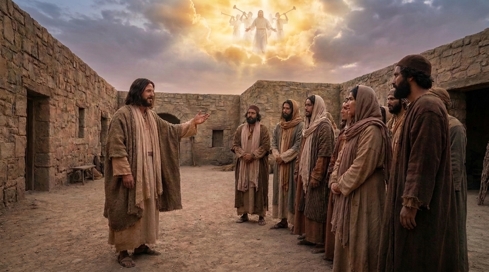

A Esperança Viva e a Volta de Cristo
A Primeira Carta aos Tessalonicenses é um dos escritos mais antigos do apóstolo Paulo. Ele a enviou a uma igreja recém-fundada na Macedônia que estava enfrentando dura perseguição. Paulo escreve para encorajar os novos convertidos, expressar sua alegria pela fé firme que eles mantinham e corrigir mal-entendidos sobre o retorno de Jesus. Os cristãos de Tessalônica estavam preocupados com os entes queridos que já haviam morrido, temendo que perdessem a volta do Senhor. Paulo os conforta, garantindo que os mortos em Cristo ressuscitarão primeiro e que a esperança da segunda vinda deve motivar uma vida santa e irrepreensível no presente.
Ficha Técnica
- Autor: O apóstolo Paulo.
- Tema Principal: O encorajamento na perseguição, a santidade de vida e a esperança reconfortante da segunda vinda de Cristo.
- Versículo-Chave: "Porque o próprio Senhor descerá dos céus, com o brado de comando, com a voz do arcanjo e com o som da trombeta de Deus, e os mortos em Cristo ressuscitarão primeiro." (1 Tessalonicenses 4:16)
Estrutura
- Saudações e gratidão pela fé exemplar dos tessalonicenses (Cap. 1)
- O ministério de Paulo na cidade e seu profundo afeto pela igreja (Caps. 2-3)
- Instruções práticas para uma vida santa, pura e cheia de amor (Cap. 4:1-12)
- O consolo e a esperança a respeito da volta de Jesus (Caps. 4:13-5:11)
- Exortações finais sobre a vida em comunidade e saudações (Cap. 5:12-28)